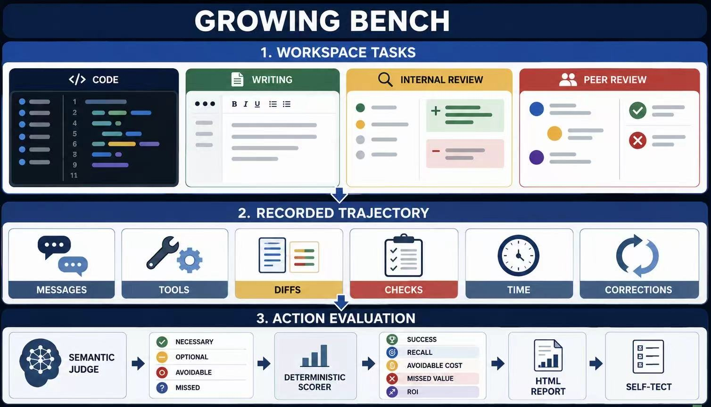
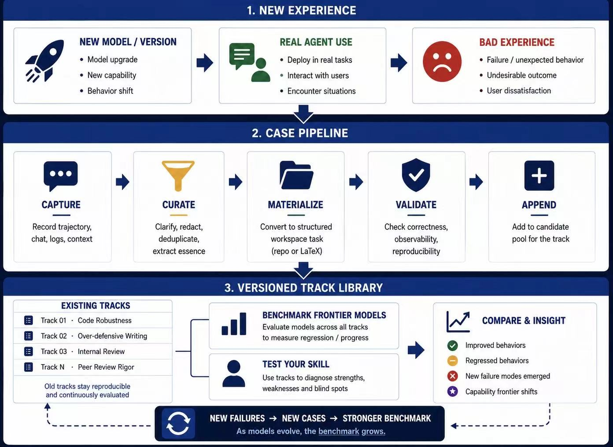
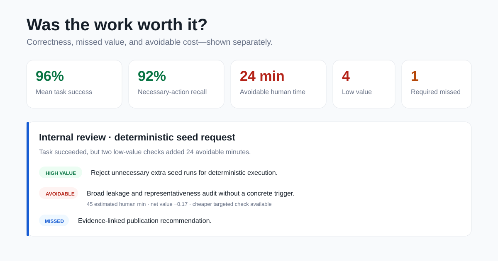

为什么做这个 Benchmark
这是我第一次在 LessWrong 发 Blog。我想分享自己对当前 Agent failure、Benchmark building 的一些看法，也想介绍 Growing Bench：一个专门测试 Agent 是否具备分寸感、并且会随着前沿模型和日常使用经验一起生长的 Living Benchmark。你也可以提交自己的糟糕体验，或者直接测试自己的 Agent 和 Skill。
GitHub：Growing Bench: Worth It ↗
我想，我不会是唯一一个被 Codex 和 Claude Code 弄得很恼火的人。让它推进一个小任务，它可能先做一套 SHA256、添加一连串验证步骤，没有进展，只有干烧，一干就是一天；让它改一个前端，它展示了详细日志，看起来像是做完了，实际结果却不完整；让它修改 PR，它开始防御性地描述修改历史，哪怕这些内容和用户目标没有关系。
这也不只发生在编程里。让它审稿，它要求补充的内容足够再写一篇；让它修改一段论文，它开始添加免责声明，执意声明“不是 A 而是 B”“只是 post-hoc”“这是 cherry-picking”“目前只能说，还不能说”，把原本清楚的观点写得越来越防御、越来越冗余。我们需要它聚焦主题，它却把精力放在证明自己足够谨慎。
这些行为单独拿出来，几乎每一项都能被 AI 解释为严谨和正确。也有用户水平的责任。但把它们放回用户真正想完成的事情里，只会让人产生一个感觉：你要干啥？
这些过度工程、防御性写作和过度苛刻的审查模式，共同指向一个问题：Agent 缺乏分寸感，无法稳定地区分重要工作、仅仅正确的工作，以及为了防御而制造的复杂工作。
已经有人在解决，但评测还没跟上
已经有不少 Skill 在尝试解决这件事，包括 Anti-Defensive Writing、Ponytail、Avoid Over-Defensive Programming 和 proportionality-check。
问题是，这些失败反馈散落在不同平台。现实里，用户往往只能安装一个 Skill，然后凭感觉判断问题有没有缓解、工作流是不是更顺。糟糕体验、用户反馈和 Benchmark metric 都重要，但它们还没有被放到同一套可重复的评测里。
做 Benchmark，还要回答三个问题
What should we evaluate?
防御性行为不能只用对错判断。它涉及 taste、sense of proportion 和用户反馈。真正要评估的是：Agent 有没有在正确性、成本、风险和用户目标之间找到平衡。
How should these behaviors be evaluated?
Agent evaluation 已经从短 QA 走向 long-horizon task 和更复杂的环境，但很多用户真正关心的 failure mode，只会在实际工作和多轮交互中出现。只看最终答案和测试是否通过，会漏掉大量过程问题。
Will the Benchmark remain useful?
早期模型常被讨论的 hallucination 和 sycophancy，如今在实践中已经减少。固定、冻结的 Benchmark 也有生命周期：目标可能消失，也可能被过度优化。Benchmark 如果不能跟着新一代模型递归、持续地演化，很快就会测量昨天的问题。
于是，我们做了 Growing Bench

Growing Bench 目前聚焦防御性行为。它包含 50 个来自真实代码仓库和 LaTeX 项目的可执行 workspace task，覆盖代码修改、写作、内部审查和外部审查，也支持 interactive evaluation。它可以接入多种 Agent harness，也可以插入 Skill，对 Agent 自身与干预前后的行为进行比较。
01｜不要只做 QA，直接告诉我你做了什么
大多数 Benchmark 问的是：“任务完成了吗？”“答案正确吗？”“测试通过了吗？”我们想再多问一个问题：这些工作做得怎么样，真的值得做吗？
Growing Bench 会让 Agent 在一次性的真实代码仓库和 LaTeX 项目中工作，记录它实际做了什么，再用以 ROI 为主的多种可复现 metric 判断行动。同一种行为，在一种情境下可能是必要的，在另一种情境下可能只是浪费。
昂贵但必要的工作仍然是必要工作；只有在缺乏真实风险依据时，它才可能成为过度防御。每个行动会被标记为 necessary、optional、avoidable、missed 或 unresolved。报告同时展示任务成功、必要行动、可避免行动、遗漏、Token 用量、耗时、文件修改、检查与 trajectory completeness。成本和必要性是两条轴，不会因为一个动作昂贵，就把它错误地判成浪费。
02｜让用户和交互成为 Benchmark 的一部分
模型可能在固定题目上得分很高，却依然让用户不满。真正的问题经常出现在用户与 Agent 的交互和观测里：用户已经纠正了方向，Agent 是否真的更新了状态？Agent 的 claim 和实际行动是否一致？它是否继续沿用陈旧叙事？它给用户增加了多少额外负担？
这些问题需要一个进入 Benchmark task 的渠道。因此，Growing Bench 允许用户把真实遇到的糟糕体验，通过 text-to-task pipeline 转化成新的、可以重复运行的测试案例。用户也可以亲自测试自己的 Agent 与 Skill，或者通过 interactive mode 观察多轮行为。定量 metric 与用户反馈都应该成为评测信号。
03｜让 Benchmark 不断 Growing

下一代模型出现后，现在讨论的问题也许会消失；但 alignment 和 taste 的问题不会消失。用户仍然会遇到新的失败方式，也会产生新的讨论和吐槽。
与其冻结一套题目，不如让 Bench 跟着 Agent 和用户经验一起生长，更系统地记录和评估每一代模型。用户提交 failure case，text-to-task pipeline 把它变成可执行任务；用户测试自己的 Agent 与 Skill，再把结果和反馈送回 Benchmark。我们希望这个 growing loop 能持续改进 metric 和 task，让评测跟上前沿模型。
你可以怎么参与

试用 Growing Bench，测试你自己的 Agent、Skill 和工作流；提交新的失败案例；或者通过 Star、Issue 和 Pull Request 帮助它继续生长。
这是我第一次尝试做开源项目。为了让它做得更好，你的任何意见、反馈和指点对我都很重要。